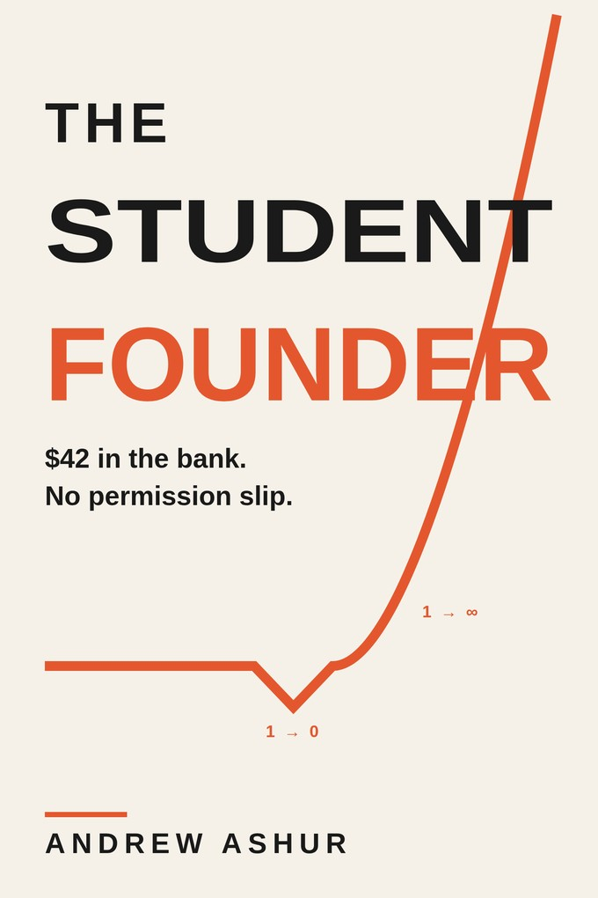
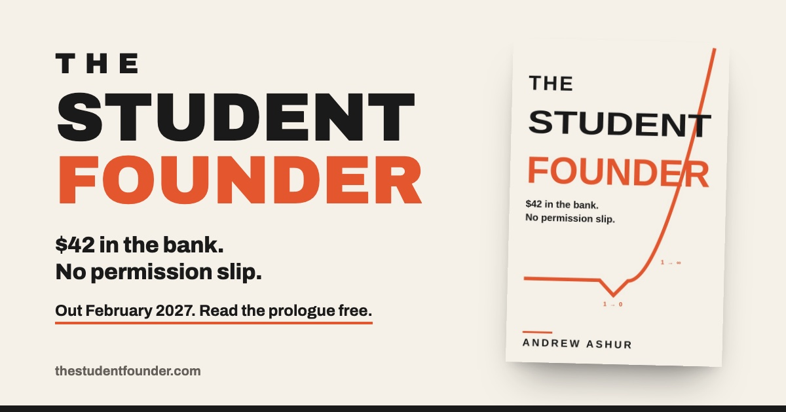

Press kit
Everything you need to write about The Student Founder or to book Andrew Ashur. For interviews, review copies, and campus talks, email andrewashur@gmail.com.

The book
- Title
- The Student Founder
- Subtitle
- Why Your Student Years Are the Best Time to Build Something Real
- Author
- Andrew Ashur
- Publication
- February 2027
- Category
- Business and entrepreneurship
- For
- High school and college students and recent graduates, and the parents, mentors, and programs who hand them the book
As a student, trying is free. After graduation, it's the most expensive thing you'll ever buy. The Student Founder is a practical manual for students who want to build something real while trying still costs almost nothing. Its argument is that what stands between a student and a first paying customer is not experience. Experience has a substitute, and the substitute is agency: seeing a problem, knowing you are free to act on it, and going to learn whatever solving it requires. The book walks through finding a real problem, finding the time, getting customers before you build, building the first version, and a 30-day sprint that turns all of it into action.
Images
- Front coverJPG, 680 × 1020
- Author photoJPG, 800 × 800

Announcement imageJPG, 1200 × 630


Open an image, then save it. Need a larger file or a different crop? Email andrewashur@gmail.com.
About the author
Short bio
Andrew Ashur is the founder and CEO of Lucid Bots, the world's largest provider of drones and robots for exterior cleaning and facade maintenance. He started it as a Davidson College junior with no engineering background, a $12 soldering iron, and $42 in the company account. Lucid Bots has shipped more than 600 robots and raised $34 million, and in 2025 Inc. 5000 named it the fastest-growing robotics manufacturer in the country.
Long bio
Andrew Ashur is the founder and CEO of Lucid Bots, the world's largest provider of drones and robots for exterior cleaning and facade maintenance. He was a junior at Davidson College when he watched window washers nearly die on the job and decided there had to be a safer way. To understand the problem, he lived it, cleaning hundreds of buildings by hand and by drone. He still carries the chemical scars.
He had no engineering background. He taught himself mechanical, electrical, and software engineering from YouTube and textbooks, lived above a garage with a $12 soldering iron, and fasted for days to save grocery money for drone parts. That obsession became Lucid Bots (Y Combinator S19), which has shipped more than 600 robots and raised $34 million. Its machines clean, paint, and coat infrastructure up to eight times faster so people don't have to risk their lives doing it. In 2025, Inc. 5000 named Lucid Bots the fastest-growing robotics manufacturer in the country. Forbes named Andrew to its 30 Under 30 list in 2020.
He finished Davidson in three years with a double major while playing Division I baseball and working three jobs. He served as Davidson's Innovator-in-Residence, working with student founders at the Hurt Hub. With his wife, he co-founded Persto to help mentorship communities scale, and he writes the Robot Rundown, a weekly robotics newsletter with more than 3,000 subscribers.
He is a dad to two girls and two rescue dogs, and married to his high school sweetheart.
Lines from the book
- $42 in the bank. No permission slip.
- As a student, trying is free. After graduation, it's the most expensive thing you'll ever buy.
- You have nothing to lose and everything to build.
- Compliments are not currency. Money is the truth.
- You don't have a time problem. You have a priority problem.
- It doesn't need to be pretty. It needs to exist.
Interview topics
- Why college is the cheapest place to fail
- A project that dies in a dorm room is a story and a skill. The same miss at twenty-eight, with rent and a career on the line, is a catastrophe.
- The Agency Quotient
- The days between having an idea nobody assigned you and taking one concrete action on it, and why it's the one number fully in a student's hands.
- What founders who lose walk away with
- Most people in the graveyard of entrepreneurship walk out holding something: a network, a stack of real skills, a story nobody who played it safe can tell.
- From $42 to a robotics company
- The two-mile walk across Chicago, the twenty-eighth floor, and the first yes.